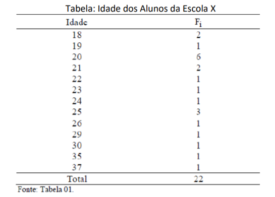
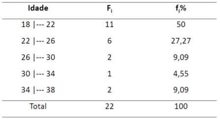
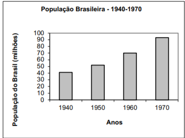
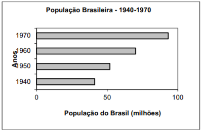
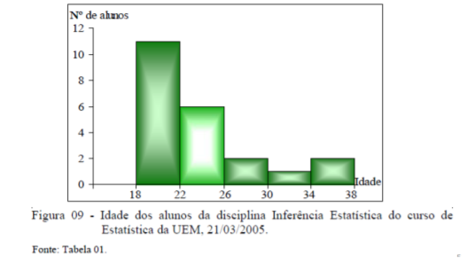
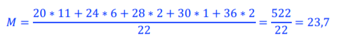
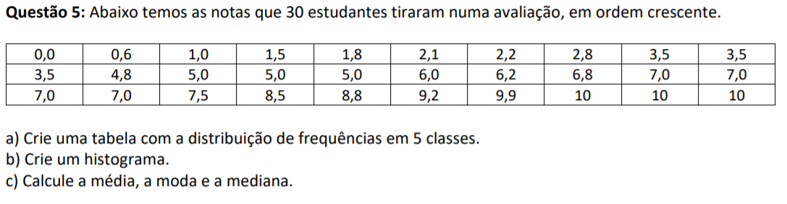
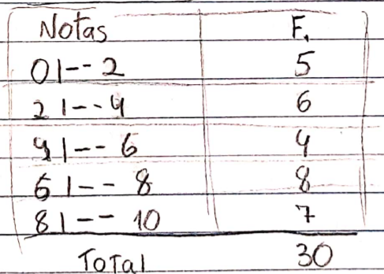
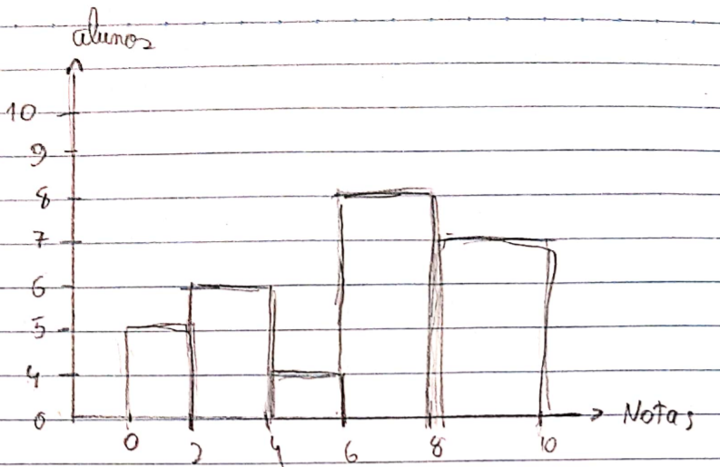
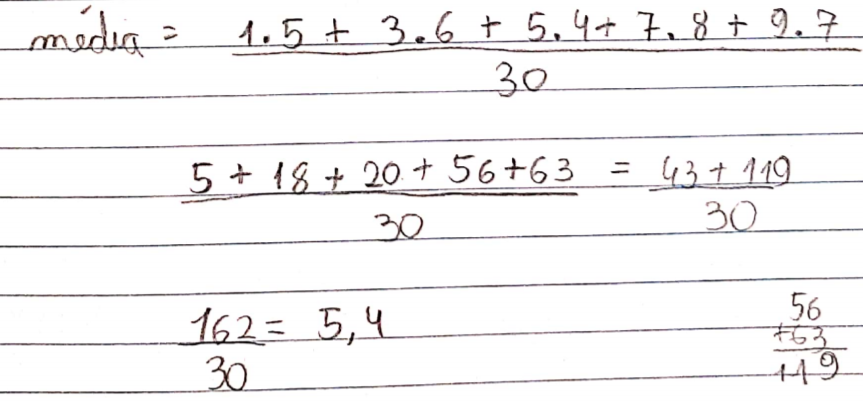

Estatística
Introdução ao tema
A estatística seria um conjunto de métodos e técnicas de organização, coleta e análise de dados, a fim de facilitar a tomada de decisões a partir dos dados coletados.
Tabelas de frequência
Um dos principais objetivos da estatística é sintetizar os dados para conseguir ter uma visão mais ampla de todos os dados coletados. Para isso são utilizadas tabelas e gráficos.
- A frequência corresponde a quantas pessoas responderam determinada resposta, a frequência de determinadas respostas.
- Como exemplo de tabela de frequência temos essa aqui:

- Nela podemos ver as idades e a frequência de pessoas que responderam determinada idade. E no final a soma de todas as frequências mostrando o total de pessoas que responderam a pesquisa.
- Outra forma de organizar os dados em classes, como a tabela abaixo:

- Podemos ver que essa é a mesma tabela da anterior, porém organizada de forma diferente. Para sabermos como organizar essas classes de forma mais correta existem alguns cálculos:
- Para saber o número mais adequado de classes/linhas é só fazer a raiz quadrada do total de objetos pesquisados, no caso os alunos.
Para saber o número mais adequado de classes/linhas é só fazer a raiz quadrada do total de objetos pesquisados, no caso os alunos.
- E para saber a amplitude de cada classe é só fazer a diferença entre a maior idade pela menor e depois dividir pela quantidade de classes.
Gráficos
- Existem diferentes tipos de gráficos que podemos utilizar, todos têm a mesma funcionalidade, representar visualmente a fim de tornar mais fácil a compreensão dos dados pesquisados. Como alguns exemplos temos:
Gráfico de colunas

Gráfico em barras

Histograma

Média
Existem dois tipos de media, a que chamamos de média aritmética simples e a média aritmética ponderada.
- Média aritmética simples: consiste na soma de todos os números de um conjunto e dividir pela quantidade de números do conjunto. Exemplo: se ocorreram 5 avaliações valendo 10 e precisamos descobrir a média do aluno, basta somar todas as 5 notas e dividir por 5.
- Média aritmética ponderada: é quando existem valores que aparecem mais vezes no conjunto ou quando existem certos valores que possuem um certo peso. Para realizá-la é só multiplicar cada valor pelo seu determinado peso ou frequência e dividir pela soma dos pesos/frequências.
- Nessa tabela para calcularmos a média vamos utilizar a média ponderada. Basta multiplicar cada número pela sua frequência, somá-los e depois dividir pelo total de frequência, ou seja, a quantidade de pessoas que responderam a pesquisa:

Mediana
A mediana representa o elemento que está no meio, ou seja, para sabermos a mediana precisamos dispor todos os elementos em ordem crescente e localizar o elemento do meio, porém para facilitar existem algumas “fórmulas” para ajudar:
- Número ímpares: quando temos um número ímpar de elementos existem duas formas de encontrar. A primeira: seria colocar os valores em ordem crescente, o número do meio será a mediana. A segunda: existe um cálculo para saber a posição da mediana (com os números em ordem crescente): (n+1)/2. Onde n é o número de elementos.
- Números pares: quando o número de termos é par é necessário fazer uma média entre os 2 elementos centrais. Para saber a posição desses elementos é só dividir o número de elementos por 2, obteremos a posição de um dos número, o outro número vai estar na posição seguinte da anterior. Exemplo: temos 8 números, para saber a posição dos números da mediana é só fazer: 8/2 = 4, isso significa que um dos números está na posição 4, consequentemente o outro termo central vai estar na posição 5, sendo assim é só somar os dois e dividir por dois para obter a mediana.
Moda
A moda é o valor com maior frequência em uma série de valores. Se em uma sala de 5 alunos 3 tiraram 10 e 2 tiraram 9 o 10 é a moda. Utilizamos a moda quando queremos uma visão mais rápida de posição.
Exercício

Essa é a questão 5 do terceiro trabalho sobre estatística básica. Escolhi ela, pois foi uma das únicas que tiveram sobre estatística:
- Começando pela letra a, precisamos fazer um cálculo para descobrir qual seria o melhor intervalo de dados em cada classe.Como o enunciado já pede que sejam com 5 classe, é só diminuir o maior número apresentado pelo menor e dividir pelo número de classes, no caso: 10-0= 10; 10/5=2. A amplitude da classe será de duas unidades.
- Para realizar a tabela é só fazer as linhas das 5 classes e contar quantos números terão em cada (seria a frequência), por exemplo: a primeira classe vai de 0 até 2, olhando para os dados é possível contar que entre 0 e 2 existem 5 números, esse número corresponde a frequência.
Foi assim que ficou minha tabela:

- A letra b pede para realizar um gráfico do tipo histograma, para isso as notas/classes serão o eixo x e a frequência/alunos será o eixo y. A principal característica do histograma é que as colunas são juntas diferente do gráfico de barras. O histograma ficaria assim:

- A letra c pede o cálculo da média e mediana e qual é a moda. Começando pela média, existem duas formas, pode somar todos os números e dividir pela quantidade de números, ou a forma mais fácil que é fazer uma média ponderada, onde você olha para a amplitude soma o inicial e o final e divide por dois, depois é só multiplicar pela frequência da classe (representando o peso), somar todos e dividir pelo total de frequência (soma dos pesos). O cálculo fica assim:

- Para encontrar a mediana primeiro observamos se a quantidade de elementos é par ou ímpar. No caso é 30, um número par, ou seja, é preciso somar os dois números centrais e dividir por 2. Para saber a posição central é só fazer: 30/2 = 15. Portanto o número na 15a posição é o 5, porém precisamos também do outro número central para fazer a média entre os dois. Como vimos anteriormente o outro número vai ser sempre o da posição seguinte do central, no caso, os números na posição 15 e 16 são 5 e 6. Então é só fazer: 5+6=11; 11/2=5,5. A mediana é 5,5.
- Por fim, para saber a moda é só olhar para a sequência e analisar qual número aparece mais, no caso é o número 7, que aparece 4 vezes.
Conclusão sobre o conteúdo
O conteúdo de estatística básica não foi novo, já que havia visto o mesmo na minha escola anterior, não me recordo exatamente em qual ano. A parte mais interessante são as tabelas e gráficos com relação a frequência, principalmente as tabelas com divisões de classes, que achei diferente já que não havia visto antes, pois facilitam na hora de calcular a média. A maioria das partes deste conteúdo são mais lógicas e não tão complexas (na minha visão), por exemplo a moda, onde não é preciso realizar nenhum cálculo apenas ver qual número aparece mais/tem maior frequência. Acredito que esse conteúdo é muito útil na hora de interpretar os gráficos e tabelas em questões mais complexas como as do Enem. Por todos esses motivos escolhi colocá-lo no portfólio.
<- Voltar para o contúdo anterior
Ir para a conclusão ->